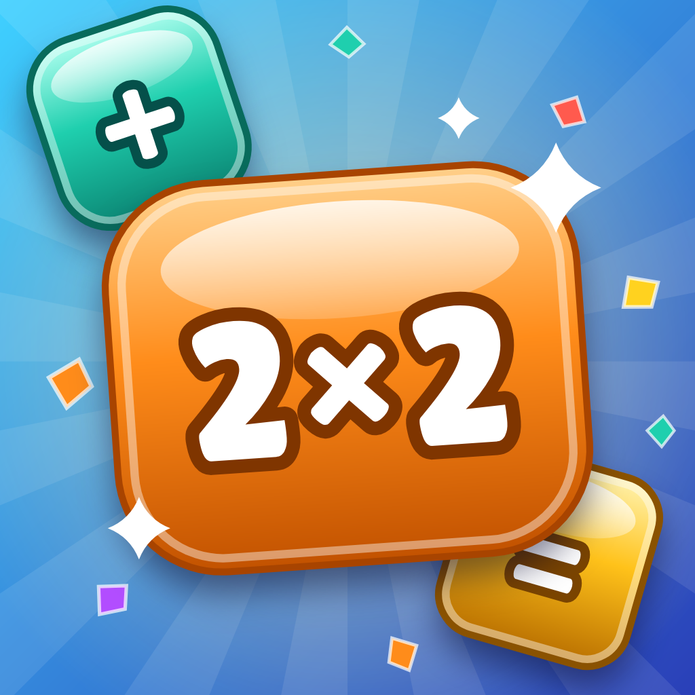

Support
How to play
Tap tiles anywhere on the board, one after another, in the order you would write the equation: a number, a sign, a number, the equals sign, the answer (9 + 9 = 18). You can also drag across them, resting a moment on each tile you want. When the tiles read as a true equation they crunch, the tiles above fall, and new ones drop in. Tap a picked tile to take it back. A negative number brings its own sign, so 11 −10 = 1 works as written. Longer equations, like 4 + 5 + 3 − 1 = 11, pay up to four times the points, and the board shows the multiplier (×1.5, ×2.5, ×4) while you pick the tiles. Reach the target score before your moves run out: one star passes a level, three is perfect.
Stuck?
Tap Hint and the game shows you an equation on the board. A hint shows only when you ask for it, and it costs nothing. Take as long as you like: in a level nothing hurries you, and the tiles you have picked stay picked while you think. Every board always has plenty of equations, and a plus, a minus and an equals sign are always close at hand.
Novice, Intermediate or Hard
The first time you open the game it asks how you want to play, and the Difficulty button on the map changes it at any time. Harder means bigger numbers. Novice keeps them small. On Intermediate they grow through each level to Medium (like 24 + 18). On Hard they grow to Big (like 45 + 36). Every level begins with small numbers, so its kind of math is met gently. Bigger numbers pay more points.
Levels
The game is twelve levels, each one kind of math, from Plus and minus to Madness, and after the twelfth Madness goes on for as long as you like. A level is twenty equations, and the counter in the box at the top left shows how far through it you are. A level changes a little as it goes: every four equations the day behind the board moves on, from morning to night, and on Intermediate and Hard the numbers grow.
Places and bonus rounds
Every level is a place of its own, from Balloon Meadow to the Carnival. Pass a level and its place lights up on the map; three stars turn its banner gold. A level you have passed opens its bonus round, the star on the road after it: sixty seconds, as many equations as you can make. Every operation past an equation's first multiplies its points and puts two seconds back on the clock (thirty seconds in all), so a longer equation is worth more than two short ones. A bonus round earns up to three stars of its own, you can play it again as often as you like, and leaving one keeps the best you had. It is the only part of the game with a clock.
Combos and streaks
An equation with two steps or more is a combo, and it multiplies its points: two steps ×1.5 (a combo), three ×2.5 (a super combo), four or more ×4 (a mega combo). The bigger the combo, the bigger its burst. A flame in the score box counts the combos you make in a row. A true equation that is not a combo ends the streak; a false one leaves it as it is. The card at the end of a level shows your longest streak. A streak pays: the second combo in a row scores a quarter more, the third half again, the fourth three quarters more, and the fifth and every one after it double. Only the combo itself is paid more, never the cascade it sets off.
More than one player
Tap your name on the map to open the leaderboard. New player starts a game of their own for someone else, a tap on a name plays as that player, and My name changes yours. Every player keeps their own levels, stars and difficulty, and the leaderboard ranks everyone by the stars they have earned. Names and games stay on your device.
Your progress
Progress saves on your device after every move. If you leave a level, the map shows Continue. Deleting the app deletes the progress. If you played an earlier version, every level you passed keeps its stars; best scores start fresh, because scoring has changed, and a level you left half way starts over.
Contact
Found a problem or have an idea? Tell us at github.com/jesse-AI-dev/math-crunch-madness-site/issues.